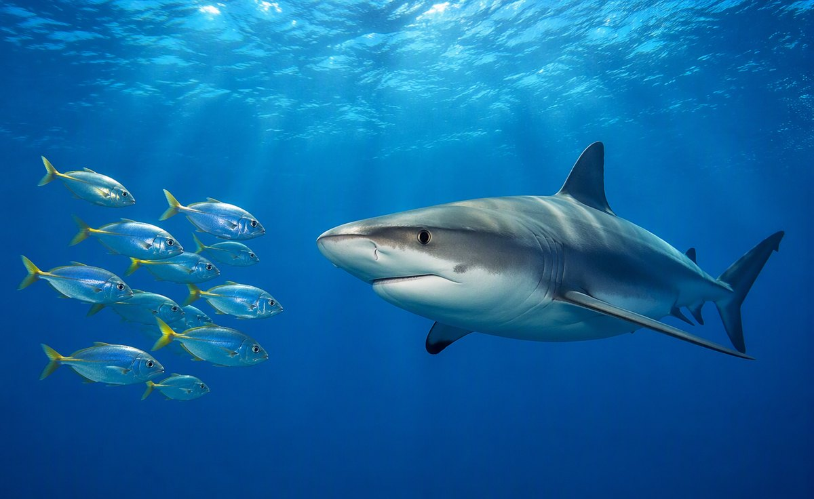
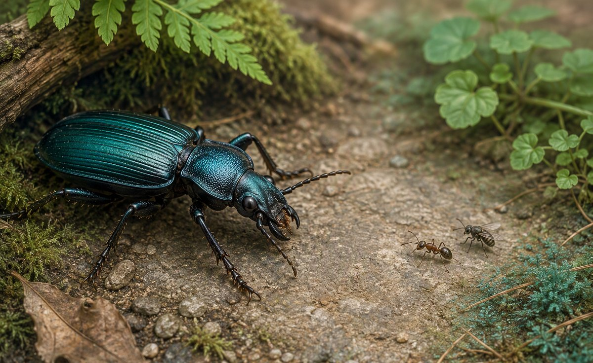

QUESTION 1 · COMPLETE
Fish ___ eaten by sharks.
Complete each station at your own pace. No microphone recording is needed.
Tap a card to hear the word. Pictures, English, Arabic and audio stay together.
Play the word, then choose its picture. No English answer is shown.
Try first without the word. Use a model only if you need it, hide it, then say the same word again.
Look at the picture.
Say the word without a model.
Read and choose. This station has no audio.

Fish ___ eaten by sharks.

Which sentence is correct?
Tortoises eat plants.
Plants ___ ___ by tortoises.